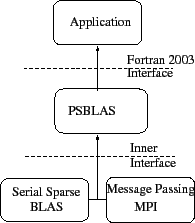
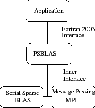

The type of linear system matrices that we address typically arise in the numerical solution of PDEs; in such a context, it is necessary to pay special attention to the structure of the problem from which the application originates. The nonzero pattern of a matrix arising from the discretization of a PDE is influenced by various factors, such as the shape of the domain, the discretization strategy, and the equation/unknown ordering. The matrix itself can be interpreted as the adjacency matrix of the graph associated with the discretization mesh.
The distribution of the coefficient matrix for the linear system is
based on the ``owner computes'' rule:
the variable associated to each mesh point is assigned to a process
that will own the corresponding row in the coefficient matrix and
will carry out all related computations. This allocation strategy
is equivalent to a partition of the discretization mesh into sub-domains.
Our library supports any distribution that keeps together
the coefficients of each matrix row; there are no other constraints on
the variable assignment.
This choice is consistent with simple data distributions
such as CYCLIC(N) and BLOCK,
as well as completely arbitrary assignments of
equation indices to processes.
In particular it is consistent with the
usage of graph partitioning tools commonly available in the
literature, e.g. METIS [14].
Dense vectors conform to sparse
matrices, that is, the entries of a vector follow the same distribution
of the matrix rows.
We assume that the sparse matrix is built in parallel, where each process generates its own portion. We never require that the entire matrix be available on a single node. However, it is possible to hold the entire matrix in one process and distribute it explicitly1, even though the resulting memory bottleneck would make this option unattractive in most cases.
![\includegraphics[scale=0.65]{figures/psblas.eps}](img3.png) 
